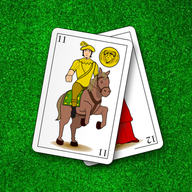

Guiñote
Política de privacidad
Última actualización: 16 de octubre de 2026
Guiñote es un juego de cartas. Puedes jugar contra la CPU sin dar ningún dato. Esta política explica qué datos se tratan cuando juegas online y qué hace la publicidad que muestra la app.
Qué datos se guardan
- El nombre que eliges para jugar online. Lo ven los demás jugadores y aparece en el ranking y en el historial de partidas.
- Tus estadísticas: partidas ganadas y perdidas.
- El historial de partidas: fecha, puntuación y nombres de los participantes.
- Un identificador aleatorio que se guarda en tu dispositivo para reconocerte la próxima vez. Se incluye en la copia de seguridad de Android de tu cuenta de Google, para que no pierdas tu cuenta si reinstalas el juego. En el servidor solo se guarda una huella cifrada (hash) de este identificador.
- Un código de recuperación, solo si lo pides (Jugar online → Código de recuperación), para recuperar tu cuenta en otro móvil. También se guarda solo su huella cifrada.
No pedimos correo, teléfono, ubicación, contactos ni ningún otro dato personal, ni usamos herramientas de analítica.
Publicidad
La app muestra un pequeño anuncio en el menú y al terminar las partidas (nunca mientras juegas), gestionado por Google AdMob. Para mostrar y medir los anuncios, Google puede usar el identificador de publicidad del dispositivo, datos aproximados de ubicación a partir de la IP e información técnica del móvil.
La primera vez que abres la app, si estás en la Unión Europea, se te pide permiso para los anuncios personalizados. Puedes cambiar tu elección cuando quieras en Ajustes → Privacidad de los anuncios. Si no das permiso, los anuncios serán no personalizados.
Google trata estos datos según su propia política: cómo usa Google los datos en la publicidad. También puedes restablecer o eliminar el identificador de publicidad en los ajustes de Google de tu móvil.
Datos técnicos
Para evitar abusos, el servidor usa tu dirección IP mientras estás conectado (por ejemplo, para limitar el número de conexiones o de cuentas nuevas). La IP no se guarda en la base de datos.
Para qué se usan
Los datos del juego online se usan solo para que funcione: emparejarte con otros jugadores, mostrar el ranking y el historial y recordar tus estadísticas. No se venden ni se ceden a terceros. Los datos de la publicidad los trata Google, como se explica arriba.
Cuánto tiempo se guardan
Mientras mantengas tu cuenta. Si no juegas online en 6 meses, tu nombre de jugador queda libre para otras personas (tu cuenta pasa a llamarse «Jugador» y un número, y puedes elegir otro nombre al volver). Las copias de seguridad del servidor se borran a los 7 días.
Cómo borrar tus datos
Desde el juego: Jugar online → Borrar mis datos. Se borran del servidor tu nombre y tus estadísticas. Las partidas que jugaste contra otras personas se conservan para su historial, pero sin tu nombre: aparecerás como «Jugador eliminado». Las demás se borran.
Si ya no tienes el juego instalado, escribe a ruizcis.dev@gmail.com indicando tu nombre de jugador y lo borraremos.
Menores
El juego no está dirigido a menores de 13 años ni recoge datos que permitan identificar a nadie. Los nombres pasan un filtro de palabras malsonantes.
Contacto
Para cualquier duda sobre esta política: ruizcis.dev@gmail.com.
Privacy Policy
Last updated: 16 October 2026
Guiñote is a card game. You can play against the CPU without providing any data. This policy explains what data is processed when you play online and what the advertising shown in the app does. The game is in Spanish, so menu names are given as they appear in the app, followed by their translation.
What data is stored
- The name you choose to play online. Other players can see it, and it appears in the ranking and in the match history.
- Your statistics: games won and lost.
- The match history: date, score and names of the participants.
- A random identifier stored on your device to recognise you next time. It is included in your Google account's Android backup, so you don't lose your account if you reinstall the game. The server only stores an encrypted fingerprint (hash) of this identifier.
- A recovery code, only if you request it (Jugar online → Código de recuperación, “Play online → Recovery code”), to recover your account on another phone. Only its encrypted fingerprint is stored as well.
We do not ask for your email, phone number, location, contacts or any other personal data, and we do not use analytics tools.
Advertising
The app shows a small ad in the menu and at the end of games (never while you play), managed by Google AdMob. To show and measure ads, Google may use the device's advertising ID, approximate location derived from the IP address and technical information about the phone.
The first time you open the app, if you are in the European Union, you are asked for consent to personalised ads. You can change your choice at any time in Ajustes → Privacidad de los anuncios (“Settings → Ad privacy”). If you do not give consent, ads will be non-personalised.
Google processes this data under its own policy: how Google uses data in advertising. You can also reset or delete the advertising ID in your phone's Google settings.
Technical data
To prevent abuse, the server uses your IP address while you are connected (for example, to limit the number of connections or new accounts). The IP address is not stored in the database.
What the data is used for
Online game data is used only to make it work: matching you with other players, showing the ranking and history, and keeping your statistics. It is not sold or shared with third parties. Advertising data is processed by Google, as explained above.
How long it is kept
For as long as you keep your account. If you do not play online for 6 months, your player name becomes available to other people (your account is renamed “Jugador” followed by a number, and you can choose another name when you come back). Server backups are deleted after 7 days.
How to delete your data
From the game: Jugar online → Borrar mis datos (“Play online → Delete my data”). Your name and statistics are deleted from the server. Games you played against other people are kept for their history, but without your name: you will appear as “Jugador eliminado” (“Deleted player”). All other games are deleted.
If you no longer have the game installed, write to ruizcis.dev@gmail.com with your player name and we will delete it.
Children
The game is not directed at children under 13 and does not collect data that could identify anyone. Names go through a profanity filter.
Contact
For any questions about this policy: ruizcis.dev@gmail.com.